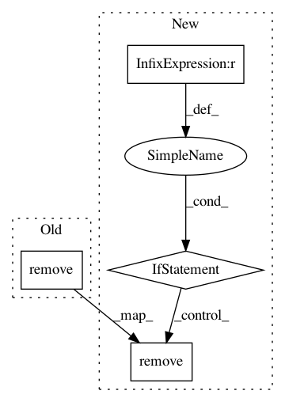

d061a0083e3b4a0275cadd9f7e1bdbd8b0132182,nilearn/plotting/tests/test_surf_plotting.py,,test_load_surf_data_file_freesurfer,#,70
Before Change
filename_thick = tempfile.mktemp(suffix=".thickness")
nb.freesurfer.io.write_morph_data(filename_thick, data)
assert_array_equal(load_surf_data(filename_thick), np.zeros((20, )))
os.remove(filename_thick)
// test loading of data from real label and annot files
label_start = np.array([5900, 5899, 5901, 5902, 2638])
label_end = np.array([8756, 6241, 8757, 1896, 6243])
After Change
// We test load_surf_data by creating fake data with function
// "write_morph_data" that works only if nibabel
// version is recent with nibabel >= 2.1.0
if LooseVersion(nb.__version__) >= LooseVersion("2.1.0"):
data = np.zeros((20, ))
filename_sulc = tempfile.mktemp(suffix=".sulc")
nb.freesurfer.io.write_morph_data(filename_sulc, data)
assert_array_equal(load_surf_data(filename_sulc), np.zeros((20, )))
os.remove(filename_sulc)
filename_thick = tempfile.mktemp(suffix=".thickness")
nb.freesurfer.io.write_morph_data(filename_thick, data)
assert_array_equal(load_surf_data(filename_thick), np.zeros((20, )))
os.remove(filename_thick)
// test loading of data from real label and annot files
label_start = np.array([5900, 5899, 5901, 5902, 2638])
label_end = np.array([8756, 6241, 8757, 1896, 6243])
label = load_surf_data(os.path.join(datadir, "test.label"))
assert_array_equal(label[:5], label_start)
In pattern: SUPERPATTERN
Frequency: 4
Non-data size: 4
Instances
Project Name: nilearn/nilearn
Commit Name: d061a0083e3b4a0275cadd9f7e1bdbd8b0132182
Time: 2017-02-23
Author: dkamalakarreddy@gmail.com
File Name: nilearn/plotting/tests/test_surf_plotting.py
Class Name:
Method Name: test_load_surf_data_file_freesurfer
Project Name: epfl-lts2/pygsp
Commit Name: 87aeb436f2376af1fd2bb9b4fc048bdb7e7eb66b
Time: 2019-03-20
Author: michael.defferrard@epfl.ch
File Name: pygsp/tests/test_graphs.py
Class Name: TestImportExport
Method Name: test_break_join_signals
Project Name: arviz-devs/arviz
Commit Name: 1b2ecdd33090c5a9c726d6d3b3c365d5db56f272
Time: 2020-04-05
Author: oriol.abril.pla@gmail.com
File Name: arviz/plots/backends/matplotlib/pairplot.py
Class Name:
Method Name: plot_pair
Project Name: nilmtk/nilmtk
Commit Name: 5c2e78cca50eb862cbaf1701ae2cf291c78ff9cd
Time: 2014-12-17
Author: jack-list@xlk.org.uk
File Name: nilmtk/results.py
Class Name: Results
Method Name: _columns_with_end_removed